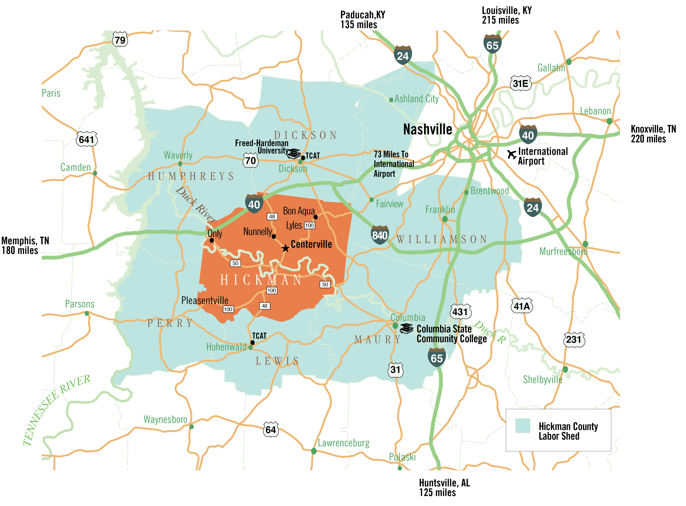
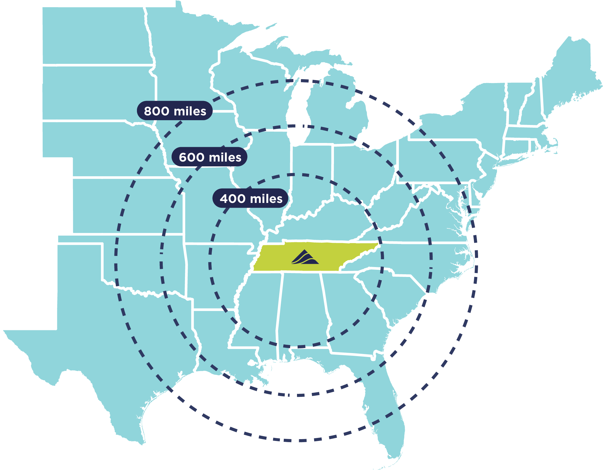
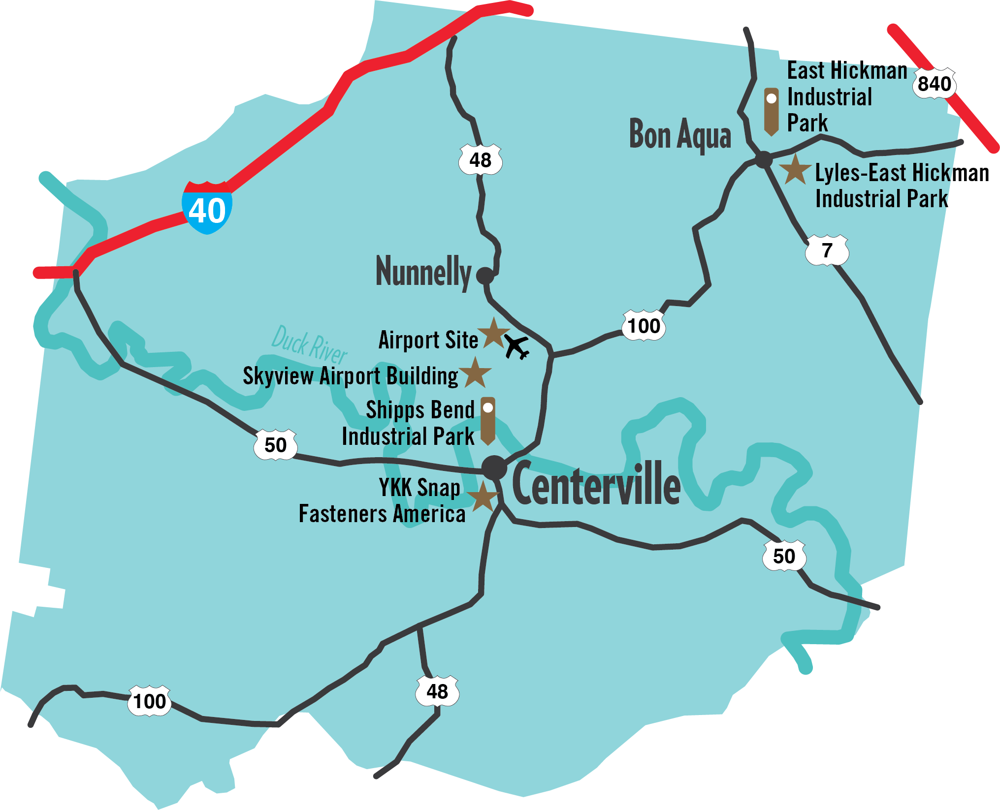
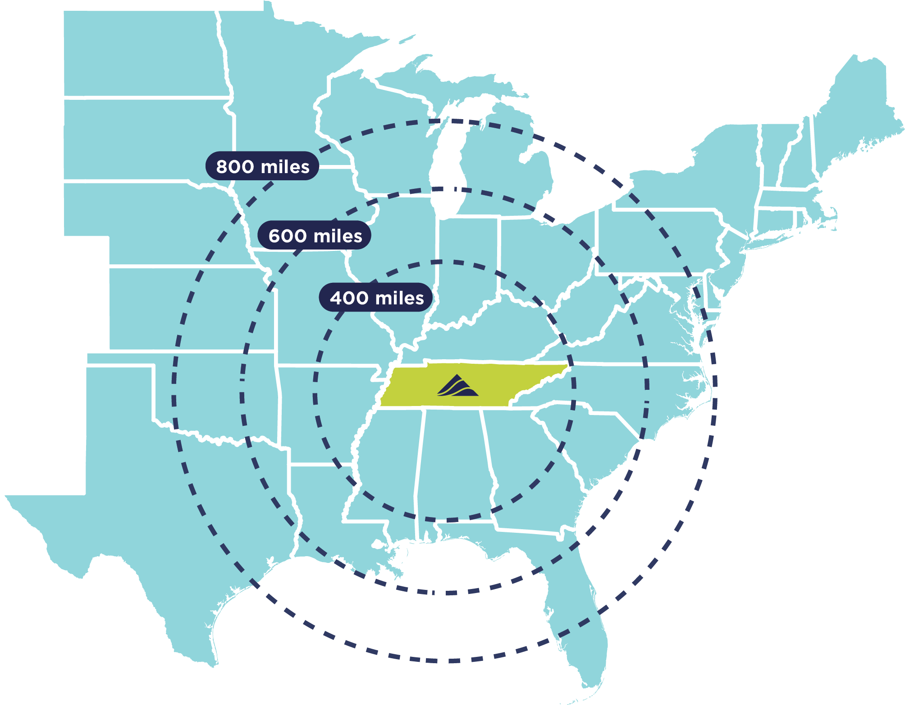
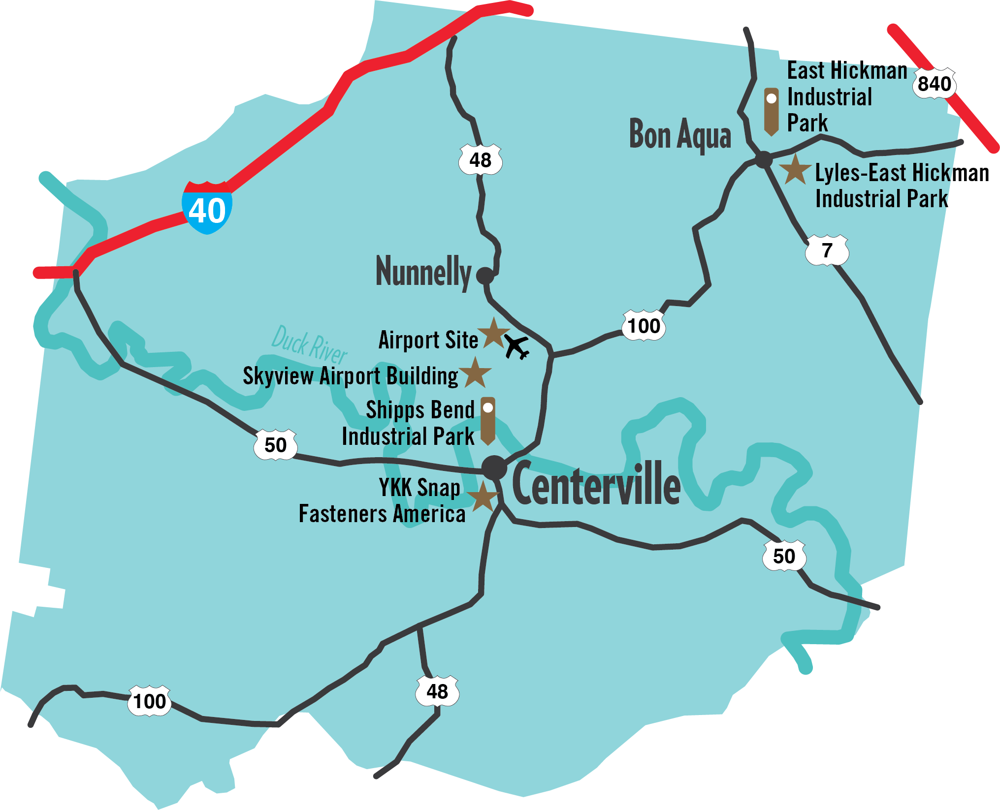

 

Among the lowest in the state, housing and land prices are available for a wide variety of incomes. With the cost approachable to many, Hickman County can be the place you choose to stay. Not only is the price point lower than most, but the quality of moderate housing is outstanding as well. The cost of living index is 80.9 so you can be at ease with your choice to make Hickman County home.
The appealing K-12 education within the Hickman County school system is another reason to plant your roots here.
These percentages show the importance of stellar education for Hickman County residents.
Hickman County has excellent healthcare, with one hospital, two clinics, one skilled nursing facility and a nationally-recognized mental health and addiction treatment center. Hickman County is also near major trauma centers in Nashville.